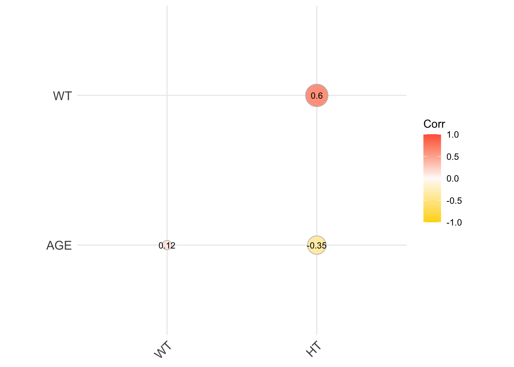
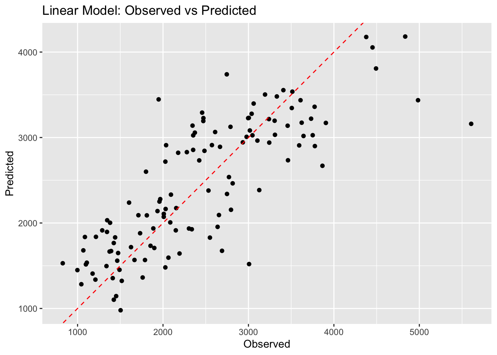
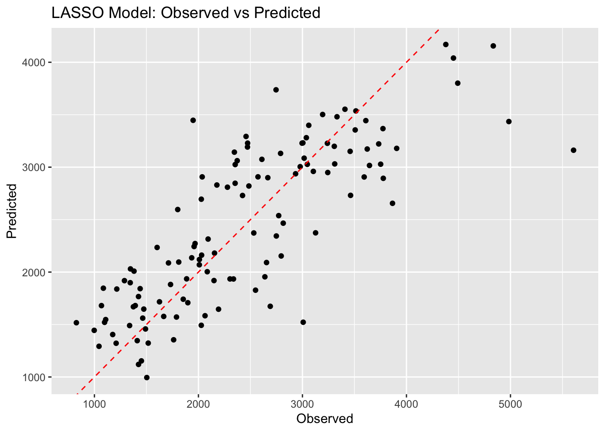
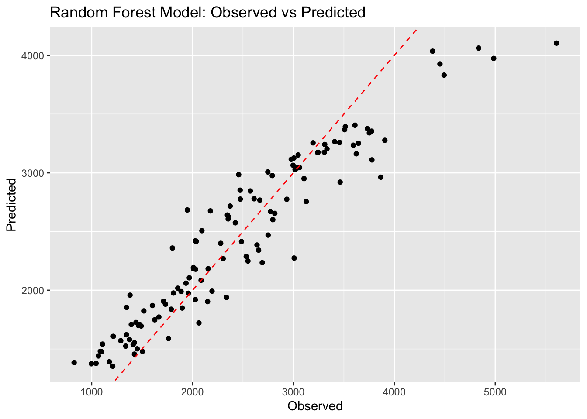
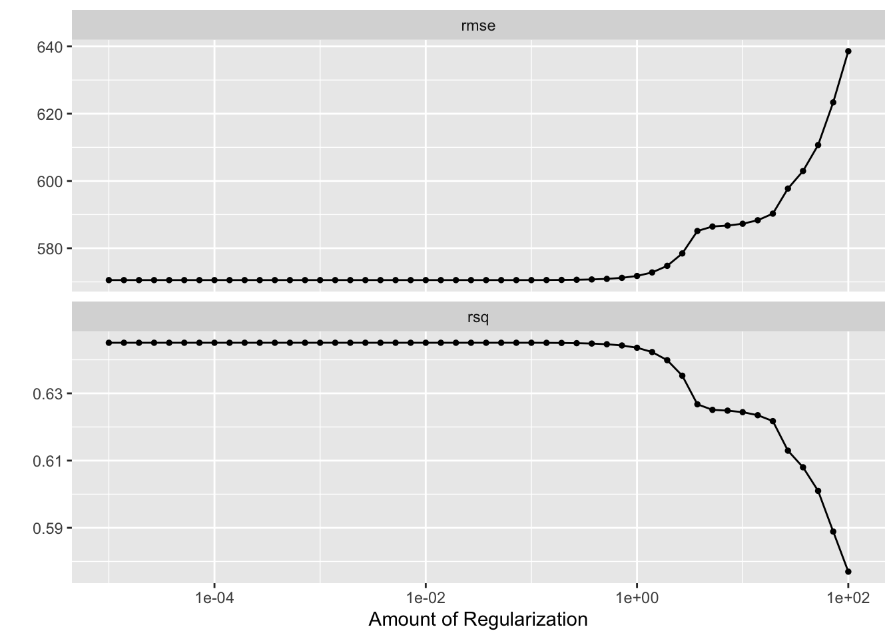
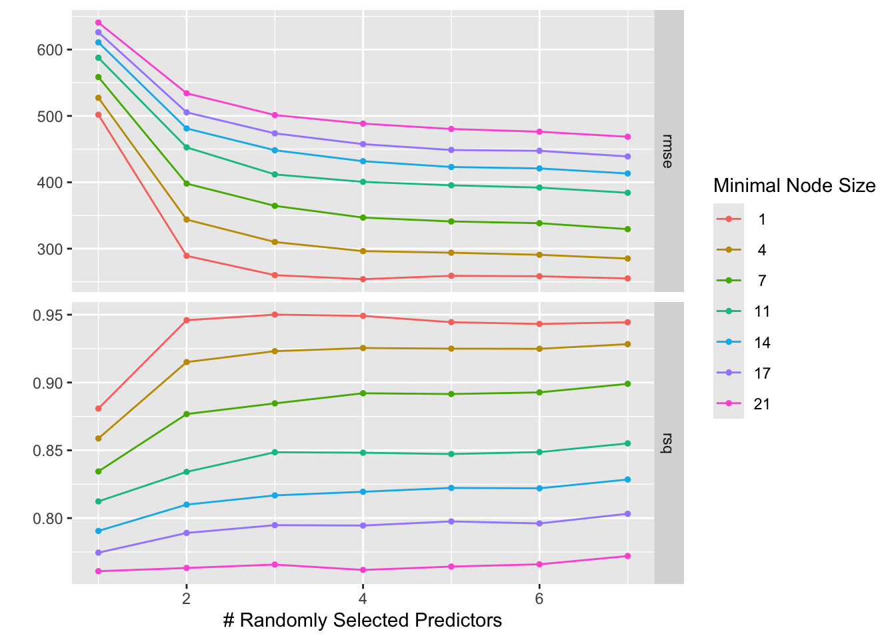
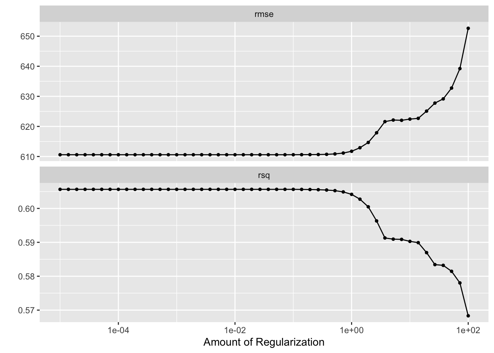
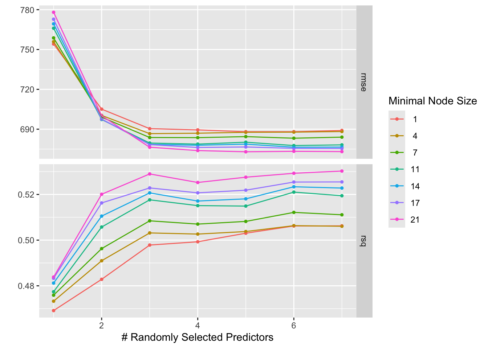

#Set the random seed to 1234ex11_seed =1234set.seed(ex11_seed)
Load rds from the fitting exercise
# Construct the path to the RDS file using here()file_path_mav <-here("ml-models-exercise", "mav_clean_ex11.rds")# Load the mav_clean dataframe from the specified RDS filemav_ex11 <-readRDS(file_path_mav)# examine the datasethead(mav_ex11)
# Count occurrences of each category in the RACE variablerace_counts <-table(mav_ex11$RACE)# Calculate percentagesrace_percentages <- (race_counts /sum(race_counts)) *100# Combine counts and percentages into a data frame for better readabilityrace_summary <-data.frame(Race =names(race_counts),Counts =as.integer(race_counts), # Ensure counts are in integer formatPercentages = race_percentages)# Print the summary data frameprint(race_summary)
Model-Based Evaluation of the Impact of Formulation and Food Intake on the Complex Oral Absorption of Mavoglurant in Healthy Subjects. Pharm Res 32, 1764–1778 (2015). https://doi.org/10.1007/s11095-014-1574-1 race break down was: Caucasian (61.7), Black (30), Native American (1.7) and Other (6.7)
So, for Race
1=Caucasian 2=Black 7=Native American 88=Other
However, for this exercise, we will just recode to 3 variables.
# Recode RACEmav_ex11 <- mav_ex11 %>%mutate(RACE =as.character(RACE)) %>%# Convert to character to handle NA properlymutate(RACE =recode(RACE, '7'='3', '88'='3')) %>%mutate(RACE =factor(RACE, levels =c('1', '2', '3'), labels =c("Caucasian", "Black", "Other")))# Now, print the levels of RACE after recoding:print(levels(mav_ex11$RACE))
[1] "Caucasian" "Black" "Other"
make a pairwise correlation plot for the continuous variables.
#####If we were to find any very strong correlations, we might want to remove those.
# Selecting only continuous variablescontinuous_vars <- mav_ex11[, c("AGE", "WT", "HT")]# Computing the correlation matrixcor_matrix <-cor(continuous_vars, use ="complete.obs")# Visualizing the correlation matrixggcorrplot(cor_matrix, method ="circle", hc.order =TRUE, type ="lower",lab =TRUE, lab_size =3, colors =c("gold", "snow", "tomato"))

print(cor_matrix)
AGE WT HT
AGE 1.0000000 0.1196740 -0.3518581
WT 0.1196740 1.0000000 0.5997505
HT -0.3518581 0.5997505 1.0000000
While the correlation between HT and WT is not strong, we will combine the two into BMI calculating new variable, BMI, from HT(m) and WT(kg).
# Define a linear regression modellinear_model_spec <-linear_reg() %>%set_engine("lm") %>%set_mode("regression")# Prepare the recipe for the linear model, specifying categorical variableslinear_model_recipe <-recipe(Y ~ ., data = mav_ex11) %>%step_dummy(all_nominal(), -all_outcomes()) # Convert categorical variables to dummy variables# Combine the model and recipe into a workflow, then fit it to the datalinear_model_workflow <-workflow() %>%add_model(linear_model_spec) %>%add_recipe(linear_model_recipe) %>%fit(data = mav_ex11)
LASSO Regression Model Specification with glmnet engine
# Then define the recipe for LASSOlasso_model_recipe <-recipe(Y ~ ., data = mav_ex11) %>%step_dummy(all_nominal(), -all_outcomes())lasso_model_spec <-linear_reg(penalty =0.1, mixture =1) %>%set_engine("glmnet") %>%set_mode("regression")# Recipe for LASSO, converting categorical variables to dummy variableslasso_model_recipe <-recipe(Y ~ ., data = mav_ex11) %>%step_dummy(all_nominal(), -all_outcomes())# Workflow for LASSO, combining model and recipe, then fitting to datalasso_model_workflow <-workflow() %>%add_model(lasso_model_spec) %>%add_recipe(lasso_model_recipe) %>%fit(data = mav_ex11)
Random Forest Model Specification with ranger engine
# Random Forest Model Specification with ranger enginerf_model_spec <-rand_forest() %>%set_engine("ranger", seed = ex11_seed) %>%set_mode("regression")# Recipe for Random Forest, ensuring categorical variables are treated correctly# No need for step_dummy() as random forest can handle categorical variables directlyrf_model_recipe <-recipe(Y ~ ., data = mav_ex11)# Workflow for Random Forest, combining model and recipe, then fitting to datarf_model_workflow <-workflow() %>%add_model(rf_model_spec) %>%add_recipe(rf_model_recipe) %>%fit(data = mav_ex11)
Linear Model Predictions
# Predictionslm_predictions_ex11 <-predict(linear_model_workflow, new_data = mav_ex11) %>%bind_cols(mav_ex11)# Calculate RMSElm_rmse_ex11 <-rmse(lm_predictions_ex11, truth = Y, estimate = .pred)# Observed vs Predicted Plotggplot(lm_predictions_ex11, aes(x = Y, y = .pred)) +geom_point() +geom_abline(intercept =0, slope =1, linetype ="dashed", color ="red") +labs(x ="Observed", y ="Predicted", title ="Linear Model: Observed vs Predicted")

Lasso Model Predictions
# Predictionslasso_predictions_ex11 <-predict(lasso_model_workflow, new_data = mav_ex11) %>%bind_cols(mav_ex11)# Calculate RMSElasso_rmse_ex11 <-rmse(lasso_predictions_ex11, truth = Y, estimate = .pred)# Observed vs Predicted Plotggplot(lasso_predictions_ex11, aes(x = Y, y = .pred)) +geom_point() +geom_abline(intercept =0, slope =1, linetype ="dashed", color ="red") +labs(x ="Observed", y ="Predicted", title ="LASSO Model: Observed vs Predicted")

Random Forest Model Predictions
# Predictionsrf_predictions_ex11 <-predict(rf_model_workflow, new_data = mav_ex11) %>%bind_cols(mav_ex11)# Calculate RMSErf_rmse_ex11 <-rmse(rf_predictions_ex11, truth = Y, estimate = .pred)# Observed vs Predicted Plotggplot(rf_predictions_ex11, aes(x = Y, y = .pred)) +geom_point() +geom_abline(intercept =0, slope =1, linetype ="dashed", color ="red") +labs(x ="Observed", y ="Predicted", title ="Random Forest Model: Observed vs Predicted")

Examine the RSME values from the models
#RMSE# Create a dataframe to hold the RMSE valuesrmse_summary_ex11 <-tibble(Model =c("Linear", "LASSO", "Random Forest"),RMSE =c(lm_rmse_ex11$.estimate, lasso_rmse_ex11$.estimate, rf_rmse_ex11$.estimate))# Print the summary tableprint(rmse_summary_ex11)
# A tibble: 3 × 2
Model RMSE
<chr> <dbl>
1 Linear 570.
2 LASSO 571.
3 Random Forest 358.
Tuning the LASSO model wihtout CV
this is not a good idea
# Define the range of penalty valuespenalty_grid <-10^seq(-5, 2, length.out =50)# Update the LASSO model spec to use tune() for the penaltylasso_model_spec_tuned <-linear_reg(penalty =tune(), mixture =1) %>%set_engine("glmnet") %>%set_mode("regression")# Use the same recipe as beforelasso_model_recipe <-recipe(Y ~ ., data = mav_ex11) %>%step_dummy(all_nominal(), -all_outcomes())# Define the tuning workflowlasso_tuning_workflow <-workflow() %>%add_model(lasso_model_spec_tuned) %>%add_recipe(lasso_model_recipe)# Create a tibble with penalty values for tuningpenalty_tibble <-tibble(penalty = penalty_grid)# Use apparent resampling for tuning (not recommended in practice)lasso_resamples <-apparent(mav_ex11)# Tune the modellasso_tuned_results <-tune_grid( lasso_tuning_workflow,resamples = lasso_resamples,grid = penalty_tibble)# Evaluate the tuned modelbest_lasso <-select_best(lasso_tuned_results, "rmse")# Print the best penalty valueprint(best_lasso)
# Visualize tuning diagnostics for LASSOlasso_tuned_results %>%autoplot()

As the penalty parameter increases, LASSO regression can drive more coefficients to zero, effectively removing them from the model. If the penalty is too large, it may remove too many features, leading the model towards a null model, which is a model with no predictors.
The unpenalized linear model is fully optimized to fit the training data without any restraint, possibly capturing noise and overfitting. When LASSO introduces a penalty for complexity, it trades off some of the training data fit to achieve a model that should generalize better. However, since we are only evaluating on the same data used to tune the penalty, we don’t see the benefit of this trade-off. In fact, due to this evaluation approach, we may see an increase in RMSE as we overly simplify the model, potentially leading to underfitting when the penalty is too high
Now for Randome Forest model
# Define the Random Forest model with specific tuning indicationsrf_model_spec <-rand_forest(trees =300, mtry =tune(), min_n =tune()) %>%set_engine("ranger", seed =123) %>%set_mode("regression")# Define the reciperf_recipe <-recipe(Y ~ ., data = mav_ex11)# Define the tuning gridtuning_grid <-grid_regular(mtry(range =c(1, 7)),min_n(range =c(1, 21)),levels =7)# Define resampling method - using the full dataset through apparent resamplingresamples <-apparent(data = mav_ex11)# Combine the model and recipe into a workflowrf_workflow <-workflow() %>%add_model(rf_model_spec) %>%add_recipe(rf_recipe)# Tune the model using the workflowrf_tuned_results <-tune_grid( rf_workflow,resamples = resamples,grid = tuning_grid)# Visualize the tuning resultsautoplot(rf_tuned_results)

Now we will try it all with CV
LASSO
# Set the seed for reproducibilityset.seed(ex11_seed)# Define the range of penalty values for the gridpenalty_grid <-10^seq(-5, 2, length.out =50)# Update the LASSO model spec to use tune() for the penaltylasso_model_spec_tuned <-linear_reg(penalty =tune(), mixture =1) %>%set_engine("glmnet") %>%set_mode("regression")# Define the recipe, including dummy variables as neededlasso_model_recipe <-recipe(Y ~ ., data = mav_ex11) %>%step_dummy(all_nominal(), -all_outcomes())# Define a workflow that includes the model spec and the recipelasso_tuning_workflow <-workflow() %>%add_model(lasso_model_spec_tuned) %>%add_recipe(lasso_model_recipe)# Create the cross-validation resamplescv_resamples <-vfold_cv(mav_ex11, v =5, repeats =5)# Tune the model with cross-validationlasso_tuned_cv_results <-tune_grid( lasso_tuning_workflow,resamples = cv_resamples,grid = penalty_tibble)# Visualize tuning diagnosticsautoplot(lasso_tuned_cv_results)

Random Forest
rf_model_spec <-rand_forest(trees =300, mtry =tune(), min_n =tune()) %>%set_engine("ranger", seed = ex11_seed) %>%set_mode("regression")# Define the reciperf_recipe <-recipe(Y ~ ., data = mav_ex11)# Define the tuning gridtuning_grid <-grid_regular(mtry(range =c(1, 7)),min_n(range =c(1, 21)),levels =7)# Define resampling method - using the full dataset through apparent resamplingrf_cv_resamples <-vfold_cv(data = mav_ex11)# Combine the model and recipe into a workflowrf_workflow <-workflow() %>%add_model(rf_model_spec) %>%add_recipe(rf_recipe)# Tune the model using the workflowrf_cvtuned_results <-tune_grid( rf_workflow,resamples = resamples,grid = tuning_grid)# Set the seed for reproducibilityset.seed(ex11_seed)# Create 5-fold CV resamples, repeated 5 timesrf_cv_resamples <-vfold_cv(data = mav_ex11, v =5, repeats =5)# Tune the model using the workflow with the corrected resamples variablerf_cvtuned_results <-tune_grid( rf_workflow,resamples = rf_cv_resamples,grid = tuning_grid)# Visualize the tuning resultsautoplot(rf_cvtuned_results)

Without external validation data, it’s hard to fully assess which model generalizes better. Lower training error (like RMSE or MSE) doesn’t always guarantee better performance on unseen data. Models like RF can sometimes be more robust to overfitting compared to linear models, depending on the data and how the tuning is done.
Conclusion:
Based on the given tuning results, the LASSO model appears to offer better predictive accuracy with a lower RMSE compared to the RF model’s MSE/RMSE. However, the final decision on which model to use should also consider factors such as model interpretability, computational cost, and how well you expect the model to generalize to new, unseen data.